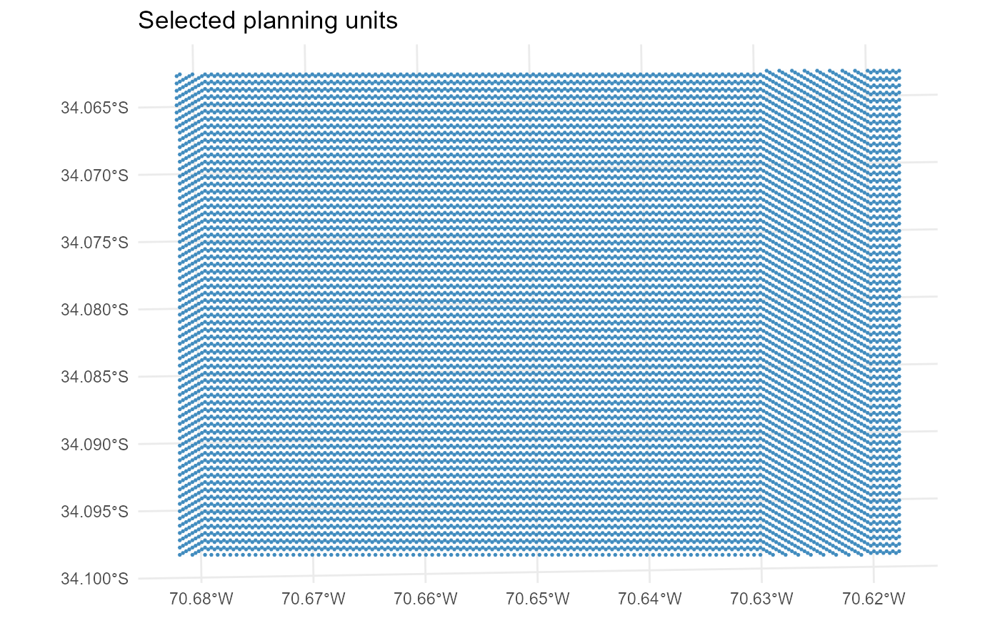

Plot the spatial distribution of selected planning units from a
Solution or SolutionSet.
This function maps the planning-unit selection summary returned by
get_pu onto the planning-unit geometry stored in the associated
Problem object.
Usage
plot_spatial_pu(
x,
runs = NULL,
...,
base_alpha = 0.1,
selected_alpha = 0.9,
base_fill = "grey92",
base_color = NA,
selected_color = NA,
draw_borders = FALSE,
show_base = TRUE
)Arguments
- x
A
SolutionorSolutionSetobject.- runs
Optional integer vector of run ids. If
NULL, aSolutionis used directly and aSolutionSetdefaults to the first run.- ...
Reserved for future extensions.
- base_alpha
Numeric value in \([0,1]\) giving the alpha of the base planning-unit layer.
- selected_alpha
Numeric value in \([0,1]\) giving the alpha of the selected planning-unit layer.
- base_fill
Fill colour for the base planning-unit layer.
- base_color
Border colour for the base planning-unit layer.
- selected_color
Border colour for selected planning units.
- draw_borders
Logical. If
FALSE, borders are not drawn.- show_base
Logical. If
TRUE, draw the base planning-unit layer underneath the selected units.
Details
Let \(w_i \in \{0,1\}\) denote the planning-unit selection variable for
planning unit \(i\). This function plots the user-facing
selected == 1 representation of \(w_i\).
If several runs are requested, the output is faceted by run_id.
Planning-unit geometry must be available in x$problem$data$pu_sf.
Examples
if (requireNamespace("sf", quietly = TRUE) &&
requireNamespace("ggplot2", quietly = TRUE)) {
data("sim_pu_sf", package = "multiscape")
problem <- structure(
list(
data = list(
pu_sf = sim_pu_sf
)
),
class = "Problem"
)
sol <- structure(
list(
problem = problem,
summary = list(
pu = data.frame(
id = sim_pu_sf$id,
selected = as.integer(seq_len(nrow(sim_pu_sf)) %% 2 == 1)
)
)
),
class = "Solution"
)
plot_spatial_pu(sol)
}
